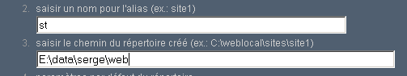
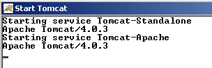
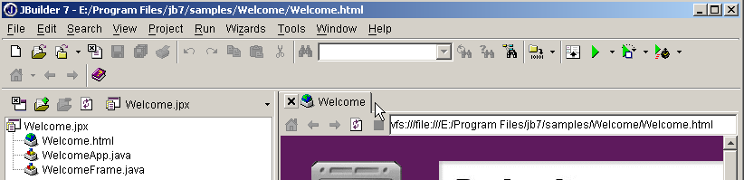

10. Appendici - Gli strumenti per lo sviluppo web
Indichiamo qui dove trovare e come installare strumenti gratuiti che consentono di sviluppare applicazioni web in Java, PHP, ASP e asp.net. Alcune versioni degli strumenti sono state aggiornate ed è possibile che le spiegazioni fornite qui non siano più valide per le versioni più recenti. Il lettore dovrà quindi adattarsi... :
- un browser recente in grado di visualizzare XML. Gli esempi del corso sono stati testati con Internet Explorer 6.
- una versione recente di JDK (Java Development Kit). Il JDK include il plug-in Java 1.4 per i browser, che consente a questi ultimi di visualizzare applet Java che utilizzano il JDK 1.4.
- un ambiente di sviluppo Java per scrivere servlet Java. In questo caso si tratta di JBuilder 7.
- server web: Apache, PWS (Personal Web Server, Cassini), Tomcat.
- Apache può essere utilizzato per lo sviluppo di applicazioni web in PERL (Practical Extracting and Reporting Language) o PHP (Personal Home Page)
- PWS può essere utilizzato per lo sviluppo di applicazioni web in ASP (Active Server Pages) o PHP su piattaforme Windows. Cassini consente invece lo sviluppo in ASP.NET.
- Tomcat viene utilizzato per lo sviluppo di applicazioni web tramite servlet Java o pagine JSP (Java Server Pages)
- un sistema di gestione di database: MySQL
- EasyPHP: uno strumento che integra il server web Apache, il linguaggio PHP e il SGBD MySQL
10.1. Server Web, browser, linguaggi di scripting
- Principali server Web
- Apache (Linux, Windows)
- Internet Information Server IIS (NT), Personal Web Server PWS (Windows 9x), Cassini (piattaforme .NET)
- Principali browser
- Internet Explorer (Windows)
- Netscape (Linux, Windows)
- Mozilla (Linux, Windows)
- Opera (Linux, Windows)
- Linguaggi di scripting lato server
- VBScript (IIS, PWS)
- JavaScript (IIS, PWS)
- Perl (Apache, IIS, PWS)
- PHP (Apache, IIS, PWS)
- Java (Apache, Tomcat)
- Linguaggi .NET
- Linguaggi di scripting lato browser
- VBScript (IE)
- JavaScript (IE, Netscape)
- PerlScript (IE)
- Java (IE, Netscape)
10.2. Dove trovare gli strumenti
http://www.netscape.com/ (link ai download) | |
http://www.microsoft.com/windows/ie/default.asp | |
http://www.mozilla.org | |
http://www.php.net | |
http://www.activestate.com | |
http://msdn.microsoft.com/scripting (seguire il link allo script di Windows) | |
http://java.sun.com/ | |
http://www.apache.org/ | |
incluso nel pacchetto di opzioni NT 4.0 per Windows 95 incluso nel CD per Windows 98 http://www.microsoft.com/ntserver/nts/downloads/recommended/NT4OptPk/win95.asp | |
http://www.microsoft.com | |
http://jakarta.apache.org/tomcat/ | |
http://www.borland.com/jbuilder/ | |
http://www.easyphp.org/ | |
http://www.asp.net |
10.3. EasyPHP
Questa applicazione è molto pratica in quanto riunisce in un unico pacchetto:
- il server Web Apache
- un interprete PHP
- il SGBD MySQL (3.23.x)
- uno strumento di amministrazione di MySQL: PhpMyAdmin
L'applicazione di installazione si presenta come segue:

L'installazione di EasyPHP non presenta problemi e nel sistema di file viene creata una struttura ad albero:

l'eseguibile dell'applicazione | |
la struttura del server Apache | |
la struttura di directory di MySQL SGBD | |
la struttura dell'applicazione phpMyAdmin | |
la struttura di php | |
radice della struttura delle pagine web fornite dal server Apache di EasyPHP | |
struttura in cui è possibile inserire script CGI per il server Apache |
Il vantaggio principale di EasyPHP è che l'applicazione viene fornita preconfigurata. Pertanto, Apache, PHP e MySQL sono già configurati per funzionare insieme. Quando si avvia EasyPhp tramite il collegamento nel menu dei programmi, viene visualizzata un'icona in basso a destra dello schermo.
 |
È la «E» con un punto rosso che deve lampeggiare se il server web Apache e il database MySQL sono operativi. Cliccandoci sopra con il tasto destro del mouse, si accede alle opzioni del menu:

L'opzione Administration consente di effettuare impostazioni e test di funzionamento:

10.3.1. Configurazione dell'interprete PHP
Il pulsante «Informazioni su PHP» dovrebbe consentire di verificare il corretto funzionamento della coppia Apache-PHP: dovrebbe apparire una pagina informativa PHP:

Il pulsante «Estensioni» mostra l’elenco delle estensioni installate per PHP. Si tratta, in realtà, di librerie di funzioni.

La schermata sopra mostra, ad esempio, che le funzioni necessarie per l’utilizzo del database MySQL sono effettivamente presenti.
Il pulsante «Impostazioni» mostra le credenziali dell’amministratore del database login/motdepasse.

L'utilizzo del database MySQL va oltre lo scopo di questa breve presentazione, ma è chiaro che sarebbe necessario impostare una password per l'amministratore del database.
10.3.2. Amministrazione di Apache
Sempre nella pagina di amministrazione di EasyPHP, il link «vos alias» consente di definire alias associati a una directory. Ciò permette di collocare le pagine Web in una posizione diversa dalla directory www della struttura di easyPhp.

Se nella pagina sopra indicata si inseriscono le seguenti informazioni:

e si utilizza il pulsante valider, al file <easyphp>\apache\conf\httpd.conf vengono aggiunte le seguenti righe:
Alias /st/ "e:/data/serge/web/"
<Directory "e:/data/serge/web">
Options FollowSymLinks Indexes
AllowOverride None
Order deny,allow
allow from 127.0.0.1
deny from all
</Directory>
<easyphp> indica la directory di installazione di EasyPHP. httpd.conf è il file di configurazione del server Apache. È quindi possibile ottenere lo stesso risultato modificando direttamente questo file. Una modifica al file httpd.conf viene normalmente applicata immediatamente da Apache. Se ciò non dovesse avvenire, sarebbe necessario arrestarlo e riavviarlo, sempre tramite l’icona di EasyPHP:
Per concludere il nostro esempio, ora è possibile inserire delle pagine web nella struttura di directory e:\data\serge\web:
e richiamare questa pagina utilizzando l'alias st:

In questo esempio, il server Apache è stato configurato per funzionare sulla porta 81. La sua porta predefinita è 80. Questo aspetto è controllato dalla seguente riga del file httpd.conf già visto in precedenza:
10.3.3. Il file di configurazione di Apache [htpd.conf] htpd.conf
Quando si desidera configurare Apache in modo più dettagliato, è necessario modificare “manualmente” il suo file di configurazione httpd.conf, che si trova qui nella cartella <easyphp>\apache\conf:

Ecco alcuni punti da tenere a mente riguardo a questo file di configurazione:
| ruolo |
indica la cartella in cui si trova la struttura di Apache | |
indica su quale porta opererà il server Web. Di norma è la 80. Modificando questa riga, è possibile far funzionare il server Web su un'altra porta | |
l'indirizzo e-mail dell'amministratore del server Apache | |
il nome del computer su cui “gira” il server Apache | |
la directory di installazione del server Apache. Quando nel file di configurazione compaiono nomi di file relativi, questi sono relativi a questa cartella. | |
la cartella radice della struttura delle pagine Web fornite dal server. In questo caso, l'URL http://machine/rep1/fic1.html corrisponderà al file E:\Program Files\EasyPHP\www\rep1\fic1.html | |
imposta le proprietà della cartella precedente | |
cartella dei log, quindi in realtà <ServerRoot>\logs\error.log: E:\Program Files\EasyPHP\apache\logs\error.log. Questo è il file da controllare se notate che il server Apache non funziona. | |
E:\Program Files\EasyPHP\cgi-bin sarà la radice della struttura in cui sarà possibile inserire gli script CGI. Pertanto, l'URL dello script CGI sarà: http://machine/cgi-bin/rep1/script1.pl E:\Program Files\EasyPHP\cgi-bin\rep1\script1.pl. | |
imposta le proprietà della cartella sopra indicata | |
righe di caricamento dei moduli che consentono ad Apache di funzionare con PHP4. | |
imposta i suffissi dei file da considerare come file da elaborare da parte di PHP |
10.3.4. Amministrazione di MySQL con PhpMyAdmin
Nella pagina di amministrazione di EasyPhp, fare clic sul pulsante PhpMyAdmin:

L'elenco a discesa sotto Accueil consente di visualizzare i database attuali. |  |
Il numero tra parentesi indica il numero di tabelle. Se si seleziona un database, vengono visualizzate le relative tabelle: |  |
La pagina web offre una serie di operazioni sul database:

Se si clicca sul link Afficher da user:

Qui c'è un solo utente: root, che è l'amministratore di MySQL. Seguendo il link Modifier, si potrebbe modificare la sua password, che al momento è vuota, cosa sconsigliata per un amministratore. Non ci soffermeremo ulteriormente su PhpMyAdmin, che è un software ricco di funzionalità e che meriterebbe una descrizione di diverse pagine.
10.4. PHP
Abbiamo visto come ottenere PHP tramite l'applicazione EasyPhp. Per ottenere direttamente PHP, andremo sul sito http://www.php.net. PHP non è utilizzabile solo in ambito web. È possibile utilizzarlo come linguaggio di scripting su Windows. Creare il seguente script e salvarlo con il nome date.php:
<?
// script PHP che visualizza l'ora
$maintenant=date("j/m/y, H:i:s",time());
echo "Nous sommes le $maintenant";
?>
In una finestra DOS, selezionate la directory di [date.php] ed eseguite il programma:
dos>"e:\program files\easyphp\php\php.exe" date.php
X-Powered-By: PHP/4.2.0
Content-type: text/html
Nous sommes le 18/07/02, 09:31:01
10.5. PERL
È preferibile che Internet Explorer sia già installato. Se è presente, Active Perl lo configurerà in modo che accetti gli script PERL nelle pagine HTML, script che saranno eseguiti dallo stesso IE sul lato client. Il sito di Active Perl si trova all'indirizzo URL http://www.activestate.comA l'installazione, PERL verrà installato in una directory che chiameremo <perl>. Contiene la seguente struttura:
DEISL1 ISU 32 403 23/06/00 17:16 DeIsL1.isu
BIN <REP> 23/06/00 17:15 bin
LIB <REP> 23/06/00 17:15 lib
HTML <REP> 23/06/00 17:15 html
EG <REP> 23/06/00 17:15 eg
SITE <REP> 23/06/00 17:15 site
HTMLHELP <REP> 28/06/00 18:37 htmlhelp
Il file eseguibile perl.exe si trova in <perl>\bin. Perl è un linguaggio di scripting che funziona su Windows e Unix. Viene inoltre utilizzato nella programmazione WEB. Scriviamo un primo script:
# script PERL che visualizza l'ora
# moduli
use strict;
# programma
my ($secondes,$minutes,$heure)=localtime(time);
print "Il est $heure:$minutes:$secondes\n";
Salvate questo script in un file denominato heure.pl. Aprite una finestra DOS, posizionatevi nella directory dello script precedente ed eseguite lo script:
10.6. Vbscript, Javascript, Perlscript
Questi linguaggi sono linguaggi di scripting per Windows. Possono funzionare in diversi contesti, come ad esempio
- Windows Scripting Host per un utilizzo diretto in Windows, in particolare per scrivere script di amministrazione di sistema
- Internet Explorer. Viene quindi utilizzato all’interno delle pagine HTML, alle quali conferisce una certa interattività impossibile da ottenere con il solo linguaggio HTML.
- Internet Information Server (IIS), il server Web di Microsoft su NT/2000, e il suo equivalente Personal Web Server (PWS) su Win9x. In questo caso, VBScript viene utilizzato per la programmazione lato server web, una tecnologia denominata ASP (Active Server Pages) da Microsoft.
Si scarica il file di installazione da URL: http://msdn.microsoft.com/scripting e si seguono i collegamenti relativi a Windows Script. Vengono installati:
- il contenitore Windows Scripting Host, che consente l’utilizzo di vari linguaggi di scripting, quali VBScript e JavaScript, ma anche altri come PerlScript, fornito con Active Perl.
- un interprete VBscript
- un interprete JavaScript
Vediamo alcuni test rapidi. Creiamo il seguente programma vbscript:
' una classe
class personne
Dim nom
Dim age
End class
' creazione di un oggetto persona
Set p1=new personne
With p1
.nom="dupont"
.age=18
End With
' visualizzazione delle proprietà della persona p1
With p1
wscript.echo "nom=" & .nom
wscript.echo "age=" & .age
End With
Questo programma utilizza oggetti. Chiamiamolo objets.vbs (il suffisso vbs indica un file VBScript). Accediamo alla cartella in cui si trova ed eseguiamolo:
dos>cscript objets.vbs
Microsoft (R) Windows Script Host Version 5.6
Copyright (C) Microsoft Corporation 1996-2001. All rights reserved.
nom=dupont
age=18
Ora creiamo il seguente programma JavaScript che utilizza gli array:
// array in una variante
// array vuoto
tableau=new Array();
affiche(tableau);
// array che cresce dinamicamente
for(i=0;i<3;i++){
tableau.push(i*10);
}
// visualizzazione tabella
affiche(tableau);
// ancora
for(i=3;i<6;i++){
tableau.push(i*10);
}
affiche(tableau);
// tabelle multidimensionali
WScript.echo("-----------------------------");
tableau2=new Array();
for(i=0;i<3;i++){
tableau2.push(new Array());
for(j=0;j<4;j++){
tableau2[i].push(i*10+j);
}//for j
}// for i
affiche2(tableau2);
// fine
WScript.quit(0);
// ---------------------------------------------------------
function affiche(tableau){
// visualizzazione tabella
for(i=0;i<tableau.length;i++){
WScript.echo("tableau[" + i + "]=" + tableau[i]);
}//per
}//funzione
// ---------------------------------------------------------
function affiche2(tableau){
// visualizzazione tabella
for(i=0;i<tableau.length;i++){
for(j=0;j<tableau[i].length;j++){
WScript.echo("tableau[" + i + "," + j + "]=" + tableau[i][j]);
}// for j
}//for i
}//funzione
Questo programma utilizza array. Chiamiamolo tableaux.js (il suffisso js indica un file JavaScript). Accediamo alla directory in cui si trova ed eseguiamolo:
dos>cscript tableaux.js
Microsoft (R) Windows Script Host Version 5.6
Copyright (C) Microsoft Corporation 1996-2001. Tous droits réservés.
tableau[0]=0
tableau[1]=10
tableau[2]=20
tableau[0]=0
tableau[1]=10
tableau[2]=20
tableau[3]=30
tableau[4]=40
tableau[5]=50
-----------------------------
tableau[0,0]=0
tableau[0,1]=1
tableau[0,2]=2
tableau[0,3]=3
tableau[1,0]=10
tableau[1,1]=11
tableau[1,2]=12
tableau[1,3]=13
tableau[2,0]=20
tableau[2,1]=21
tableau[2,2]=22
tableau[2,3]=23
Un ultimo esempio in Perlscript per concludere. Per poter utilizzare Perlscript è necessario avere installato Active Perl.
<job id="PERL1">
<script language="PerlScript">
# del Perl classico
%dico=("maurice"=>"juliette","philippe"=>"marianne");
@cles= keys %dico;
for ($i=0;$i<=$#chiavi;$i++){
$cle=$cles[$i];
$valeur=$dico{$cle};
$WScript->echo ("clé=".$cle.", valeur=".$valeur);
}
# di PerlScript che utilizza gli oggetti Windows Script
$dico=$WScript->CreateObject("Scripting.Dictionary");
$dico->add("maurice","juliette");
$dico->add("philippe","marianne");
$WScript->echo($dico->item("maurice"));
$WScript->echo($dico->item("philippe"));
</script>
</job>
Questo programma illustra la creazione e l'utilizzo di due dizionari: uno secondo il classico stile Perl, l'altro con l'oggetto Scripting Dictionary di Windows Script. Salviamo questo codice nel file dico.wsf (wsf è l'estensione dei file Windows Script). Accediamo alla cartella contenente questo programma ed eseguiamolo:
dos>cscript dico.wsf
Microsoft (R) Windows Script Host Version 5.6
Copyright (C) Microsoft Corporation 1996-2001. Tous droits réservés.
clé=philippe, valeur=marianne
clé=maurice, valeur=juliette
juliette
marianne
Perlscript può utilizzare gli oggetti del contenitore in cui viene eseguito. In questo caso si trattava di oggetti del contenitore Windows Script. Nel contesto della programmazione web, gli script VBscript, JavaScript e Perlscript possono essere eseguiti sia all’interno del browser IE, sia all’interno di un server PWS o IIS. Se lo script è piuttosto complesso, può essere opportuno testarlo al di fuori del contesto web, all’interno del contenitore Windows Script come visto in precedenza. In questo modo sarà possibile testare solo le funzioni dello script che non utilizzano oggetti specifici del browser o del server. Anche con questa limitazione, questa possibilità rimane interessante poiché in genere è piuttosto scomodo eseguire il debug di script in esecuzione all’interno di server web o browser.
10.7. JAVA
Java è disponibile all’indirizzo URL: http://www.sun.com e si installa in una struttura di directory che chiameremo <java>, contenente i seguenti elementi:
22/05/2002 05:51 <DIR> .
22/05/2002 05:51 <DIR> ..
22/05/2002 05:51 <DIR> bin
22/05/2002 05:51 <DIR> jre
07/02/2002 12:52 8 277 README.txt
07/02/2002 12:52 13 853 LICENSE
07/02/2002 12:52 4 516 COPYRIGHT
07/02/2002 12:52 15 290 readme.html
22/05/2002 05:51 <DIR> lib
22/05/2002 05:51 <DIR> include
22/05/2002 05:51 <DIR> demo
07/02/2002 12:52 10 377 848 src.zip
11/02/2002 12:55 <DIR> docs
Nella cartella bin si trovano javac.exe, il compilatore Java, e java.exe, la macchina virtuale Java. È possibile eseguire i seguenti test:
- Scrivere il seguente script:
//programma Java che visualizza l'ora
import java.io.*;
import java.util.*;
public class heure{
public static void main(String arg[]){
// si recuperano data e ora
Date maintenant=new Date();
// visualizzazione
System.out.println("Il est "+maintenant.getHours()+
":"+maintenant.getMinutes()+":"+maintenant.getSeconds());
}//main
}//classe
- Salvare questo programma con il nome heure.java. Aprire una finestra DOS. Passare alla directory del file heure.java e compilarlo:
dos>c:\jdk1.3\bin\javac heure.java
Note: heure.java uses or overrides a deprecated API.
Note: Recompile with -deprecation for details.
Nel comando sopra riportato, [c:\jdk1.3\bin\javac] deve essere sostituito con il percorso esatto del compilatore javac.exe. Nella stessa directory di heure.java deve essere presente un file denominato heure.class, che rappresenta il programma che verrà ora eseguito dalla macchina virtuale java.exe.
- Eseguire il programma:
Nel comando sopra riportato, [c:\jdk1.3\bin\java] deve essere sostituito con il percorso esatto della macchina virtuale Java [java.exe].
10.8. Server Apache
Abbiamo visto che è possibile ottenere il server Apache tramite l'applicazione EasyPhp. Per scaricarlo direttamente, visitiamo il sito di Apache: http://www.apache.org. L’installazione crea una struttura di directory in cui si trovano tutti i file necessari al funzionamento del server. Chiamiamo questa directory <apache>. Essa contiene una struttura simile alla seguente:
UNINST ISU 118 805 23/06/00 17:09 Uninst.isu
HTDOCS <REP> 23/06/00 17:09 htdocs
APACHE~1 DLL 299 008 25/02/00 21:11 ApacheCore.dll
ANNOUN~1 3 000 23/02/00 16:51 Announcement
ABOUT_~1 13 197 31/03/99 18:42 ABOUT_APACHE
APACHE EXE 20 480 25/02/00 21:04 Apache.exe
KEYS 36 437 20/08/99 11:57 KEYS
LICENSE 2 907 01/01/99 13:04 LICENSE
MAKEFI~1 TMP 27 370 11/01/00 13:47 Makefile.tmpl
README 2 109 01/04/98 6:59 README
README NT 3 223 19/03/99 9:55 README.NT
WARNIN~1 TXT 339 21/09/98 13:09 WARNING-NT.TXT
BIN <REP> 23/06/00 17:09 bin
MODULES <REP> 23/06/00 17:09 modules
ICONS <REP> 23/06/00 17:09 icons
LOGS <REP> 23/06/00 17:09 logs
CONF <REP> 23/06/00 17:09 conf
CGI-BIN <REP> 23/06/00 17:09 cgi-bin
PROXY <REP> 23/06/00 17:09 proxy
INSTALL LOG 3 779 23/06/00 17:09 install.log
cartella dei file di configurazione di Apache | |
cartella dei file di log (monitoraggio) di Apache | |
i file eseguibili di Apache |
10.8.1. Configurazione
Nella cartella <Apache>\conf si trovano i seguenti file: httpd.conf, srm.conf, access.conf. Nelle ultime versioni di Apache, i tre file sono stati riuniti in httpd.conf. Abbiamo già illustrato i punti salienti di questo file di configurazione. Negli esempi che seguono è stata utilizzata per i test la versione Apache di EasyPhp e, di conseguenza, il relativo file di configurazione. In esso, DocumentRoot, che indica la radice della struttura delle pagine web, è e:\program files\easyphp\www.
10.8.2. Link PHP - Apache
Per effettuare il test, creare il file intro.php contenente solo la seguente riga:
e inserirlo nella directory principale delle pagine del server Apache (DocumentRoot sopra indicato). Richiedere l’URL http://localhost/intro.php. Dovrebbe apparire un elenco di informazioni php:

Il seguente script PHP visualizza l'ora. Lo abbiamo già visto in precedenza:
<?
// time: numero di millisecondi dal 01/01/1970
// "formato di visualizzazione data-ora
// d: giorno a 2 cifre
// m: mese a 2 cifre
// y: anno a due cifre
// H: ora 0,23
// i: minuti
// s: secondi
print "Nous sommes le " . date("d/m/y H:i:s",time());
?>
Mettiamo questo file di testo nella directory principale delle pagine del server Apache (DocumentRoot) e chiamiamolo date.php. Accediamo con un browser all’indirizzo http://localhost/date.phpURL. Si ottiene la seguente pagina:

10.8.3. Link PERL-APACHE
Viene creato tramite una riga del tipo: ScriptAlias /cgi-bin/ "E:/Program Files/EasyPHP/cgi-bin/" nel file <apache>\conf\httpd.conf. La sua sintassi è ScriptAlias /cgi-bin/ "<cgi-bin>", dove <cgi-bin> è la cartella in cui è possibile inserire gli script CGI. CGI (Common Gateway Interface) è uno standard di comunicazione tra server WEB e applicazioni. Un client richiede al server Web una pagina dinamica, c.a.d, ovvero una pagina generata da un programma. Il server WEB deve quindi richiedere a un programma di generare la pagina. CGI definisce l’interazione tra il server e il programma, in particolare la modalità di trasmissione delle informazioni tra queste due entità. Se necessario, modificate la riga ScriptAlias /cgi-bin/ "<cgi-bin>" e riavviate il server Apache. Eseguite quindi il seguente test:
- Scrivere lo script:
#!c:\perl\bin\perl.exe
# script PERL che visualizza l'ora
# moduli
use strict;
# programma
my ($secondes,$minutes,$heure)=localtime(time);
print <<FINHTML
Content-Type: text/html
<html>
<head>
<title>heure</title>
</head>
<body>
<h1>Il est $heure:$minutes:$secondes</h1>
</body>
FINHTML
;
- Inserire questo script in <cgi-bin>\heure.pl, dove <cgi-bin> è la cartella in cui possono essere inseriti gli script CGI (cfr. httpd.conf). La prima riga #!c:\perl\bin\perl.exe indica il percorso dell'eseguibile perl.exe. Modificarlo se necessario.
- Avviare Apache se non è già stato fatto
- Accedere con un browser all'URL http://localhost/cgi-bin/heure.pl. Si otterrà la seguente pagina:

10.9. Il server PWS
10.9.1. Installazione di t
Il server PWS (Personal Web Server) è una versione personale del server IIS (Internet Information Server) di Microsoft. Quest'ultimo è disponibile sui sistemi NT e 2000. Sui sistemi Win9x, PWS è normalmente disponibile con il pacchetto di installazione di Internet Explorer. Tuttavia, non viene installato di default. È necessario eseguire un'installazione personalizzata di IE e richiedere l'installazione di PWS. È inoltre disponibile nel NT 4.0 Option Pack per Windows 95.
10.9.2. Primi test
La directory principale delle pagine Web del server PWS è unità:\inetpub\wwwroot, dove unità è il disco su cui è stato installato PWS. Di seguito supponiamo che tale unità sia D. Pertanto, l'URL http://machine/rep1/page1.html corrisponderà al file d:\inetpub\wwwroot\rep1\page1.html. Il server PWS interpreta ogni file con estensione .asp (Active Server Pages) come uno script che deve eseguire per generare una pagina HTML. PWS opera per impostazione predefinita sulla porta 80. Anche il server web Apache... È quindi necessario arrestare Apache per poter utilizzare PWS se si dispone di entrambi i server. L'altra soluzione consiste nel configurare Apache affinché operi su una porta diversa. Pertanto, nel file di configurazione di Apache, si sostituisce la riga «Port 80» con «Port 81»; Apache opererà d'ora in poi sulla porta 81 e potrà essere utilizzato contemporaneamente a PWS. Se PWS è stato avviato e si richiede l'accesso a URL http://localhost, si ottiene una pagina simile alla seguente:

10.9.3. Collegamento PHP - PWS
- Di seguito è riportato un file .reg destinato a modificare il registro di sistema. Fare doppio clic su questo file per modificare il registro. In questo caso, il file dll necessario si trova in d:\php4 insieme all’eseguibile di PHP. Modificare se necessario. I caratteri \ devono essere duplicati nel percorso della DLL.
REGEDIT4
[HKEY_LOCAL_MACHINE\SYSTEM\CurrentControlSet\Services\w3svc\parameters\Script Map]
".php"="d:\\php4\\php4isapi.dll"
- Riavviare il sistema affinché la modifica del Registro di sistema venga applicata.
- Creare una cartella php in d:\inetpub\wwwroot, che è la radice del server PWS. Una volta fatto ciò, avviare PWS e selezionare la scheda «Avanzate». Selezionare il pulsante «Aggiungi» per creare una cartella virtuale:
- Confermare il tutto e riavviare PWS. Inserire in d:\inetpub\wwwroot\php il file intro.php contenente la seguente unica riga:
- Richiedere al server PWS il file URL http://localhost/php/intro.php. Dovrebbe apparire l'elenco delle informazioni PHP già visualizzate con Apache.
10.10. Tomcat: servlet Java e pagine JSP (Java Server Pages)
Tomcat è un server Web che consente di generare pagine HTML tramite servlet (programmi Java eseguiti dal server Web) o pagine JSP (Java Server Pages), ovvero pagine che combinano codice Java e codice HTML. Si tratta dell’equivalente delle pagine ASP (Active Server Pages) del server IIS/PWS di Microsoft, in cui si mescola codice VBScript o JavaScript con codice HTML.
10.10.1. Installazione
Tomcat è disponibile all'indirizzo URL: http://jakarta.apache.org. Si scarica un file .exe di installazione. Quando si avvia questo programma, esso indica innanzitutto quale JDK utilizzerà. Infatti, Tomcat necessita di un JDK per installarsi e, successivamente, per compilare ed eseguire i servlet Java. È quindi necessario aver installato un JDK Java prima di installare Tomcat. Si consiglia di utilizzare il JDK più recente. L’installazione creerà una struttura di directory <tomcat>:

consiste semplicemente nel decomprimere questo archivio in una directory. Scegliete una directory il cui percorso contenga solo nomi senza spazi (ad esempio, non "Program Files"), poiché è presente un bug nel processo di installazione di Tomcat. Scegliete ad esempio C:\tomcat o D:\tomcat. Chiamiamo questa directory <tomcat>. Al suo interno troverete una cartella denominata jakarta-tomcat e, al suo interno, la seguente struttura:
LOGS <REP> 15/11/00 9:04 logs
LICENSE 2 876 18/04/00 15:56 LICENSE
CONF <REP> 15/11/00 8:53 conf
DOC <REP> 15/11/00 8:53 doc
LIB <REP> 15/11/00 8:53 lib
SRC <REP> 15/11/00 8:53 src
WEBAPPS <REP> 15/11/00 8:53 webapps
BIN <REP> 15/11/00 8:53 bin
WORK <REP> 15/11/00 9:04 work
10.10.2. Avvio/Arresto del server Web Tomcat
Tomcat è un server Web, proprio come Apache o PWS. Per avviarlo, sono disponibili dei collegamenti nel menu dei programmi:
per avviare Tomcat | |
per arrestarlo |
Quando si avvia Tomcat, viene visualizzata una finestra DOS con il seguente contenuto:

È possibile ridurre a icona questa finestra DOS. Rimarrà aperta finché Tomcat sarà attivo. A questo punto è possibile procedere con i primi test. Il server Web Tomcat opera sulla porta 8080. Una volta avviato Tomcat, aprite un browser Web e digitate l'indirizzo http://localhost:8080. Dovreste visualizzare la seguente pagina:

Seguite il link «Servlet Examples»:

Fate clic sul link Execute da RequestParameters, quindi su quello di Source. Avrete una prima panoramica di cosa sia un servlet Java. Potrete fare lo stesso con i link presenti nelle pagine JSP.
Per arrestare Tomcat, utilizzeremo il link «Stop Tomcat» nel menu dei programmi.
10.11. Jbuilder
JBuilder è un ambiente di sviluppo per applicazioni Java. Per creare servlet Java in cui non sono presenti interfacce grafiche, non è indispensabile disporre di un ambiente di questo tipo. Sono sufficienti un editor di testo e un JDK. Tuttavia, JBuilder offre alcuni vantaggi rispetto alla tecnica precedente:
- facilità di debug: il compilatore segnala le righe errate di un programma ed è facile individuarle
- suggerimenti di codice: quando si utilizza un oggetto Java, JBuilder fornisce in linea l’elenco delle proprietà e dei metodi di quest’ultimo. Ciò è molto pratico se si considera che la maggior parte degli oggetti Java presenta un numero molto elevato di proprietà e metodi che è difficile ricordare.
JBuilder è disponibile sul sito http://www.borland.com/jbuilder. Per ottenere il software è necessario compilare un modulo. Una chiave di attivazione viene inviata via e-mail. Per installare JBuilder 7, ad esempio, si è proceduto come segue:
- sono stati scaricati tre file zip: uno per l’applicazione, uno per la documentazione e uno per gli esempi. Ciascuno di questi file zip è raggiungibile tramite un link separato sul sito di JBuilder.
- Si è installata prima l’applicazione, poi la documentazione e infine gli esempi
- Quando si avvia l’applicazione per la prima volta, viene richiesta una chiave di attivazione: è quella che vi è stata inviata via e-mail. Nella versione 7, questa chiave è in realtà l’intero contenuto di un file di testo che può essere inserito, ad esempio, nella cartella di installazione di JB7. Nel momento in cui viene richiesta la chiave, si indica il file in questione. Una volta fatto ciò, la chiave non verrà più richiesta.
È necessario effettuare alcune configurazioni utili se si desidera utilizzare JBuilder per creare servlet Java. Infatti, la versione denominata «Jbuilder personale» è una versione ridotta che, in particolare, non include tutte le classi necessarie per lo sviluppo web in Java. È possibile fare in modo che JBuilder utilizzi le librerie di classi fornite da Tomcat. Si procede come segue:
- avviare JBuilder

- attivare l’opzione Tools/Configure JDKs

Nella sezione JDK Settings sopra riportata, normalmente nel campo Name è presente un JDK 1.3.1. Se si dispone di una versione più recente di JDK, utilizzare il pulsante Change per specificare la directory di installazione di quest’ultima. Nell’esempio sopra riportato, è stata specificata la directory E:\Program Files\jdk14 in cui era stato installato un JDK 1.4. D’ora in poi, JBuilder utilizzerà questo JDK per le proprie compilazioni ed esecuzioni. Nella sezione (Class, Source, Documentation) è presente l’elenco di tutte le librerie di classi che saranno analizzate da JBuilder, in questo caso le classi di JDK 1.4. Le classi di quest’ultimo non sono sufficienti per lo sviluppo web in Java. Per aggiungere altre librerie di classi si utilizza il pulsante Add e si indicano i file .jar aggiuntivi che si desidera utilizzare. I file .jar sono librerie di classi. Tomcat 4.x include tutte le librerie di classi necessarie per lo sviluppo web. Si trovano in <tomcat>\common\lib, dove <tomcat> è la directory di installazione di Tomcat:

Con il pulsante Add, aggiungeremo queste librerie, una alla volta, all’elenco delle librerie esplorate da JBuilder:

Da questo momento in poi, è possibile compilare programmi Java conformi allo standard J2EE, in particolare i servlet Java. JBuilder serve solo per la compilazione, mentre l'esecuzione è successivamente garantita da Tomcat secondo le modalità spiegate nel corso.
10.12. Il server Web Cassini
Per lavorare con la piattaforma .NET di Microsoft, è possibile utilizzare il server web Cassini. Questo è disponibile tramite un altro prodotto denominato [WebMatrix], che è un ambiente gratuito di sviluppo web sulle piattaforme .NET, disponibile all’URL:

Si seguirà attentamente la procedura di installazione del prodotto:
- scaricare e installare la piattaforma .NET (versione 1.1 del marzo 2004)
- scaricare e installare WebMatrix
- scaricare e installare MSDE (Microsoft Data Engine), che è una versione limitata di SQL Server.
Una volta completata l’installazione, il prodotto [WebMatrix] sarà disponibile tra i programmi installati:

Il collegamento [ASP.NET] Web Matrix avvia lo sviluppo di IDE da ASP.NET:

Il collegamento [Class Browser] avvia uno strumento di esplorazione delle classi .NET:

Per testare l'installazione, avviamo [WebMatrix]:
42

All’avvio iniziale, [WebMatrix] richiede le caratteristiche del nuovo projet.C: questa è la sua configurazione predefinita. È possibile configurarlo in modo che non visualizzi questa finestra di dialogo all’avvio. Ciò si ottiene tramite l’opzione [File/New File]. [WebMatrix] consente di creare scheletri per diverse applicazioni web. In precedenza, abbiamo specificato con (1) che volevamo creare un’applicazione [ASP.ET Page], ovvero una pagina web. Con (2), specifichiamo la cartella in cui verrà inserita questa pagina web. Al punto (3) indichiamo il nome della pagina. Deve avere il suffisso .aspx. Infine, al punto (4), specifichiamo che vogliamo lavorare con il linguaggio VB.NET; [WebMatrix] supporta inoltre i linguaggi C# e J#.
Fatto ciò, [WebMatrix] visualizza una pagina di modifica del file [demo1.aspx]. In essa inseriamo il seguente codice:

- La scheda [Design] consente di “progettare” la pagina web che si desidera realizzare. Il procedimento è simile a quello utilizzato con un IDE per la creazione di applicazioni Windows.
- La progettazione grafica della pagina web in [Design] genererà codice HTML nella scheda [HTML]
- la pagina web può contenere controlli che generano eventi ai quali è necessario reagire, ad esempio un pulsante. Questi eventi saranno gestiti dal codice VB.NET che verrà inserito nella scheda [Code]
- in definitiva, il file demo1.aspx è un file di testo che combina il codice HTML e il codice VB.NET, risultato della progettazione grafica effettuata in [Design], del codice HTML che è stato possibile aggiungere manualmente in [HTML] e del codice VB.NET inserito in [Code]. L’intero file è disponibile nella scheda [All].
- Uno sviluppatore esperto di ASP.ET può creare il file demo1.aspx direttamente con un editor di testo senza l’ausilio di alcun IDE.
Selezioniamo l’opzione [All]. Si nota che [WebMatrix] ha già generato del codice:
<%@ Page Language="VB" %>
<script runat="server">
' Inserisci qui il codice della pagina
'
</script>
<html>
<head>
</head>
<body>
<form runat="server">
<!-- Inserisci qui il contenuto -->
</form>
</body>
</html>
Non cercheremo qui di spiegare questo codice. Lo trasformiamo nel modo seguente:
<html>
<head>
<title>Démo asp.net </title>
</head>
<body>
Il est <% =Date.Now.ToString("hh:mm:ss") %>
</body>
</html>
Il codice sopra riportato è una combinazione di HTML e del codice VB.NET. È stato inserito tra i tag <% ... %>. Per eseguire questo codice, utilizziamo l'opzione [View/Start]. [WebMatrix] avvia quindi il server Web Cassini se non è già in esecuzione

È possibile accettare i valori predefiniti proposti in questa finestra di dialogo e selezionare l’opzione [Start]. Il server Web è ora attivo. [WebMatrix] avvierà quindi il browser predefinito del computer su cui si trova e richiederà l'URL http://localhost:8080/demo1.aspx:

È possibile utilizzare il server Cassini al di fuori di [WebMatrix]. L’eseguibile del server si trova in <WebMatrix>\<versione>\WebServer.exe dove <WebMatrix> è la directory di installazione di [WebMatrix] e <versione> è il suo numero di versione:

Apriamo una finestra DOS e accediamo alla cartella del server Cassini:
E:\Program Files\Microsoft ASP.NET Web Matrix\v0.6.812>dir
...
29/05/2003 11:00 53 248 WebServer.exe
...
Eseguiamo [WebServer.exe] senza parametri:
Viene visualizzata una finestra di aiuto:

L'applicazione [WebServer], nota anche come server web Cassini, accetta tre parametri:
- /port: numero di porta del servizio web. Può essere qualsiasi valore. Il valore predefinito è 80
- /path: percorso fisico di una cartella sul disco
- /vpath: cartella virtuale associata alla cartella fisica precedente. Si presti attenzione al fatto che la sintassi non è /path=percorso ma /vpath:percorso, contrariamente a quanto indicato nella finestra di aiuto sopra riportata.
Inseriamo il file [demo1.aspx] nella seguente cartella:

Associamo alla cartella fisica [d:\data\devel\webmatrix] la cartella virtuale [/webmatrix]. Il server web potrebbe essere avviato nel modo seguente:
E:\Program Files\Microsoft ASP.NET Web Matrix\v0.6.812>webserver /port:100 /path:"d:\data\devel\webmatrix" /vpath:"/webmatrix"
Il server Cassini è quindi attivo e la sua icona appare nella barra delle applicazioni. Se si fa doppio clic su di essa:

Si visualizzano le impostazioni di avvio del server. È inoltre possibile arrestare [Stop] o riavviare [Restart] il server web. Cliccando sul link [Root URL], si visualizza la radice dell’albero web del server in un browser:

Seguiamo il link [demos]:

e poi il link [demo1.aspx]:

Si vede quindi che se la cartella fisica P=[d:\data\devel\webmatrix] è stata associata alla cartella virtuale V=[/webmatrix] e il server opera sulla porta 100, la pagina web [demo1.aspx], che si trova fisicamente in [P\demos], sarà accessibile localmente tramite URL e [http://localhost:100/V/demos/demo1.aspx].
Abbiamo dimostrato, in questo caso specifico, che lo sviluppo web ASP.NET può essere effettuato utilizzando un semplice editor di testo per la scrittura delle pagine web e il server web Cassini per testarle. Ciò vale indipendentemente dalla complessità dell’applicazione. Il IDE [WebMatrix] offre alcune facilitazioni nello sviluppo, ma poche. Uno strumento come Visual Studio.NET è molto più efficiente, ma si tratta di un prodotto commerciale.